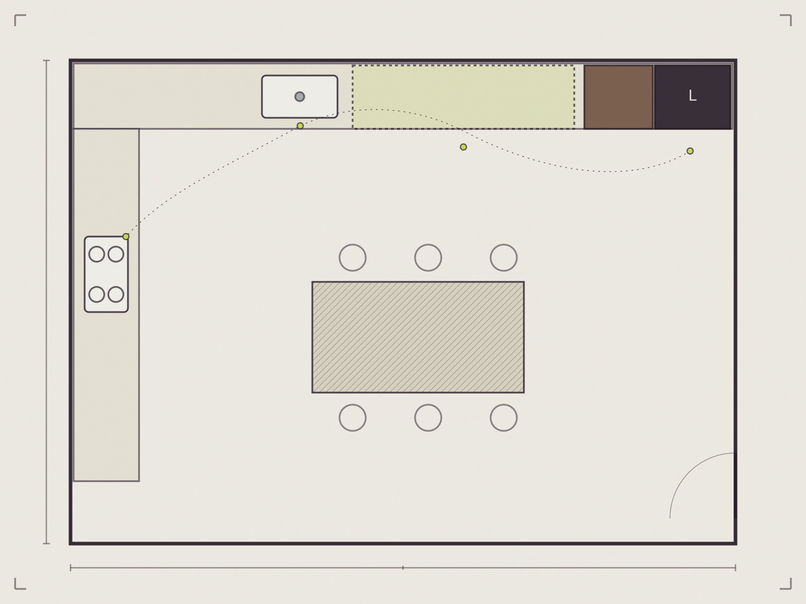
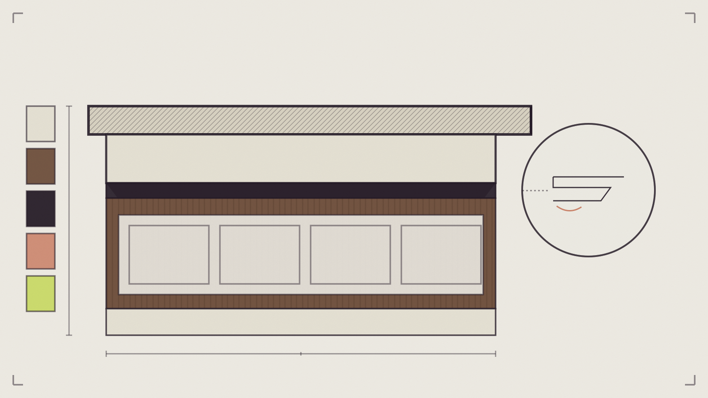

Front
Decyduje o charakterze wnętrza, ale musi współgrać z podziałem zabudowy i światłem.
Nieoficjalna koncepcja demonstracyjna — projekt nie jest oficjalną stroną firmy.
Kuchnie na wymiar · Kraków
Dobra kuchnia nie wymaga zastanawiania się, gdzie coś odłożyć albo jak dostać się do najczęściej używanych rzeczy. Układ powinien wspierać codzienne czynności, zanim zaczniemy wybierać kolor frontów.

Materiał demonstracyjnySprawdzamy, gdzie przestrzeń robocza jest najbardziej potrzebna i co nie powinno jej zajmować.
Planujemy wnętrza szafek, szuflad i wysokiej zabudowy — nie tylko ich zewnętrzny podział.
Zabudowa może pomieścić dużo, a jednocześnie nie dominować całego wnętrza.
Miejsce na odpady, detergenty, drobne sprzęty i rzeczy używane codziennie powinno wynikać z naturalnej kolejności czynności.

Materiał demonstracyjnyFront, blat, uchwyt, prowadnica i światło wpływają na wygodę równie mocno jak kolor. Materiały dobieramy nie tylko do wizji wnętrza, lecz także do sposobu użytkowania.
Decyduje o charakterze wnętrza, ale musi współgrać z podziałem zabudowy i światłem.
Najbardziej intensywnie używana powierzchnia wymaga świadomego wyboru materiału i układu.
Szuflada jest wartościowa dopiero wtedy, gdy jej zawartość ma logiczne miejsce.
Oświetlenie robocze powinno pomagać w codziennych czynnościach, a nie tylko budować wieczorny nastrój.
Wszystkie strefy w jednym ciągu — dobra przy wąskich pomieszczeniach, wymaga pilnowania kolejności stref.
Naturalny trójkąt pracy i miejsce na stół — narożnik wymaga przemyślanego mechanizmu.
Najwięcej blatu i przechowywania — potrzebuje odpowiedniej szerokości pomieszczenia.
Dodatkowa strefa pracy i spotkań — wymaga zachowania wygodnych przejść wokół wyspy.
Każdy układ ma inne zalety i ograniczenia. Diagramy pełnią funkcję edukacyjną — nie są automatyczną rekomendacją.
Nie potrzebujesz kompletu — im więcej z tej listy uda się zebrać, tym konkretniej można rozmawiać o układzie i kosztach.
Prześlij materiały i napisz, czego najbardziej brakuje Ci w obecnej przestrzeni.